Guide P5X
68 personaggi di Persona 5X: The Phantom X — tutto il contenuto delle pagine di lufel.net in italiano: setup consigliato, skill, Awareness, stat, armi, Mindscape, team.
Nightmare’s Gatewayboss della settimana, modalità e regoleIndice completotabella di tutti i personaggiRelease Scheduleordine e date di uscitaWonder: Persona e armiPersona e Wonder weapon consigliate
 AIGISAigis
AIGISAigis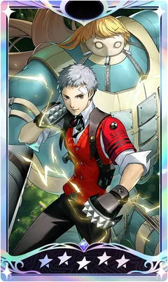
AKIHIKOAkihiko Sanada ANGEManaka Nagao
ANGEManaka Nagao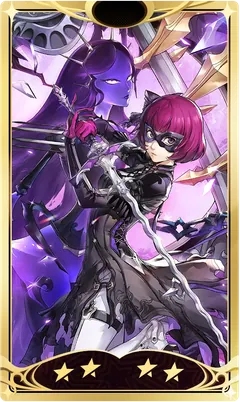
ANRIAran Hirano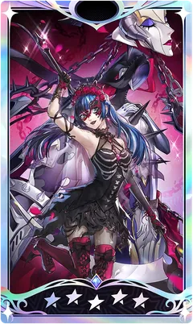
BERRYIchigo Shikano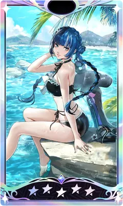
BERRY·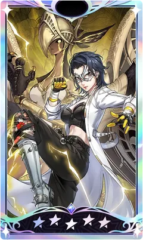
BLITZKumi Katayama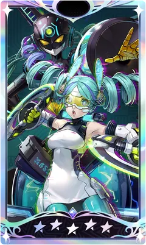
BUIYUI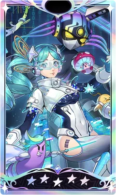
BUI·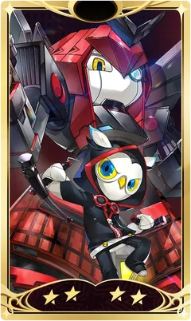
CATTLELufel CHERISHMasaki Ashiya
CHERISHMasaki Ashiya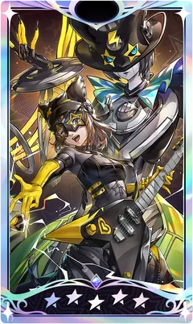
CHORDAyaka Sakai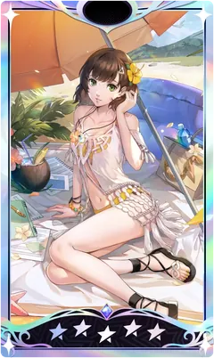
CHORD·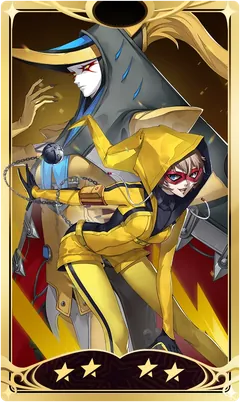
CLOSERMotoha Arai CLOSER·
CLOSER· CLOSER·
CLOSER· CROWGoro Akechi
CROWGoro Akechi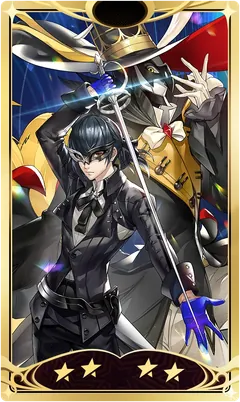
FLEURETSeiji Shiratori FOXYusuke Kitagawa
FOXYusuke Kitagawa FUUKAFuuka Yamagishi
FUUKAFuuka Yamagishi HOWLERRuna Dogenzaka
HOWLERRuna Dogenzaka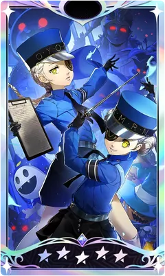
J&CJustine & Caroline JOKERRen Amamiya
JOKERRen Amamiya JOKER·
JOKER·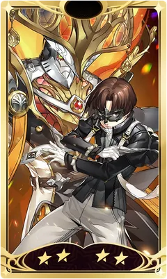
KEYKiyoshi Kurotani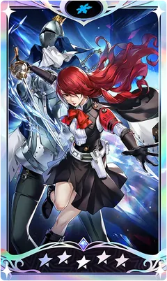
KIRIJOMitsuru Kirijo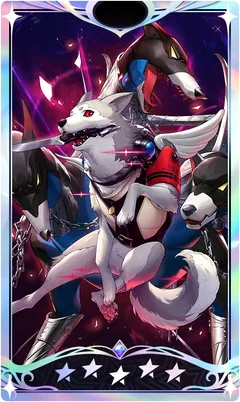
KOROMARUKoromaru KOTONEKotone Shiomi
KOTONEKotone Shiomi LEONLeo Kamiyama
LEONLeo Kamiyama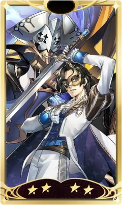
LUCEShoki Ikenami LUCE·
LUCE·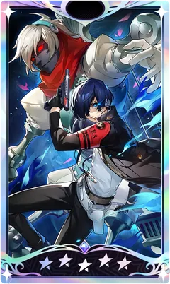
MAKOTOMakoto Yuki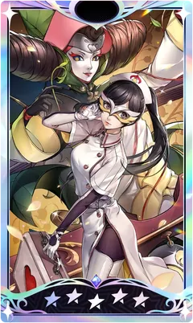
MARIANMinami Miyashita MARIAN·
MARIAN· MATOIMio Natsukawa
MATOIMio Natsukawa MESSAKira Kitazato
MESSAKira Kitazato MIKUHatsune Miku
MIKUHatsune Miku MOKOTomoko NogeMOKO·
MOKOTomoko NogeMOKO·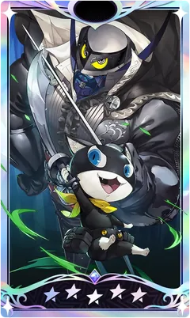
MONAMorgana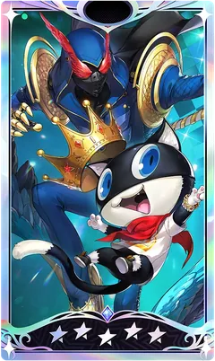
MONA· MONTMontagne Kotone
MONTMontagne Kotone MONT·
MONT·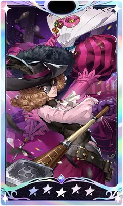
NOIRHaru Okumura OKYANNKayo Tomiyama
OKYANNKayo Tomiyama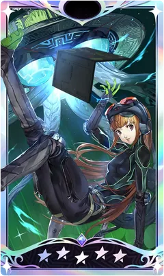
ORACLEFutaba Sakura PANTHERAnn Takamaki
PANTHERAnn Takamaki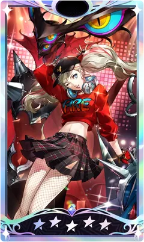
PANTHER· PHOEBEYumi Shiina
PHOEBEYumi Shiina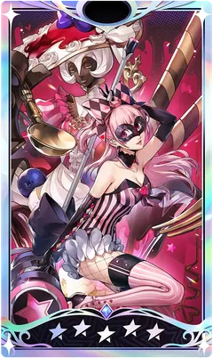
PINKYNarumi Nashimoto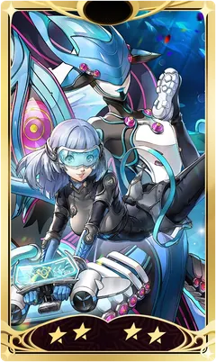
PUPPETMiyu Sahara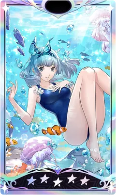
PUPPET· QUEENMakoto Niijima
QUEENMakoto Niijima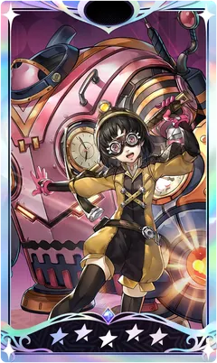
RIDDLEHaruna Nishimori RINYaoling Li
RINYaoling Li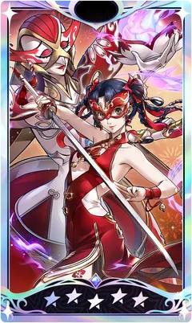
RIN·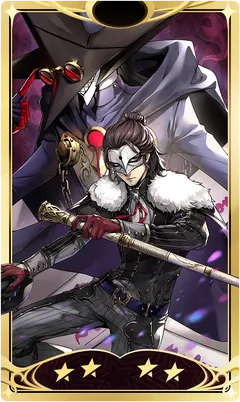
SEPIAToshiya SumiSKULLRyuji Sakamoto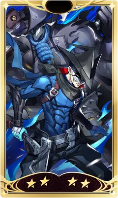
SOYShun Kano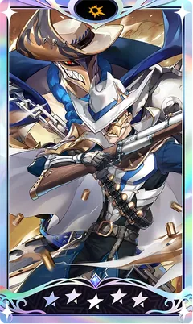
SOY·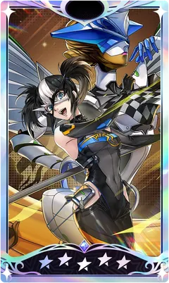
TURBOMayumi Hashimoto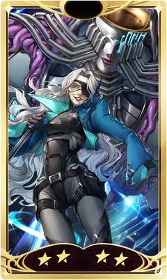
VINOChizuko Nagao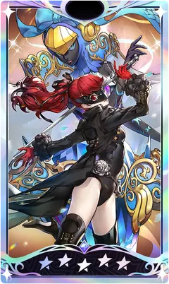
VIOLETKasumi Yoshizawa WINDRiko Tanemura
WINDRiko Tanemura WIND·
WIND·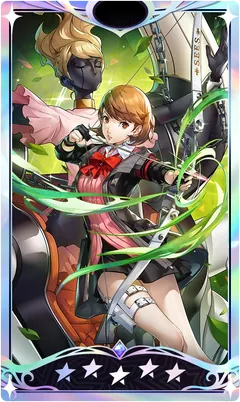
YUKARIYukari Takeba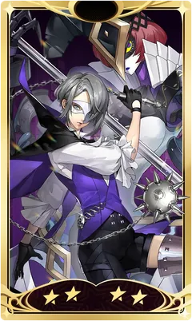
YUKIYukimi FujikawaNessuna guida con questi filtri.